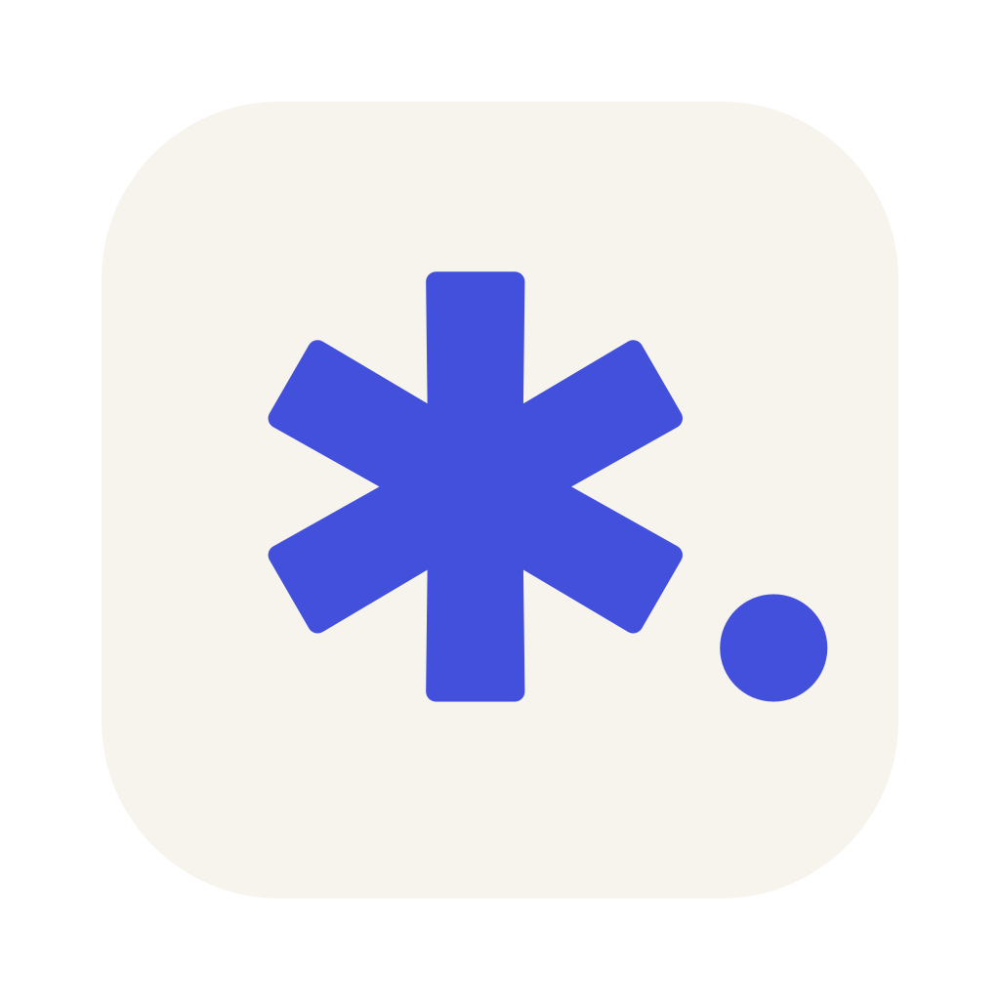
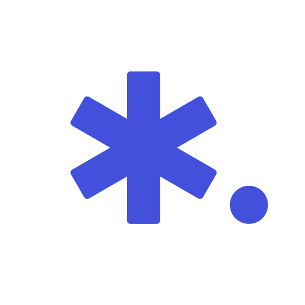
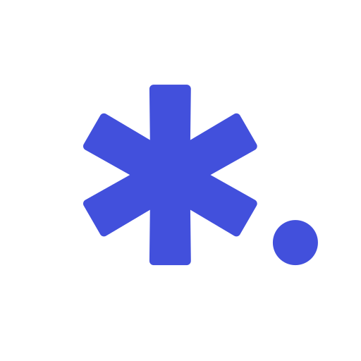

Asterisk & period / 01
星号，句点。
以一个排印星号回应 Aster 的“星”，以一枚句点连接文字创作。两块实心图形，组成轻盈、清楚的写作工具标识。


几何与光学校正
相比等宽笔画，标准构造臂从中心内端112轻微增宽至外端118，使端部更有支撑感，中央与外围的视觉重量更协调。约5.4%的构造渐扩保留了排印星号的明确轮廓，因此采纳。这是在本方案比例与使用尺寸下作出的视觉选择，并非普遍数学规则。




| 1024单位画布 | 标准版 | 小尺寸版 · ≤32px |
|---|---|---|
| 六臂结构 | 相同臂形，每60°旋转一次；布尔合并为单一实心路径 | |
| 构造内端 → 外端宽 | 112 → 118 | 136 → 143 |
| 合并后可见臂根宽 | 约114.32 | 约139.30 |
| 臂长 / 端部圆角 | R256 / r12 | R256 / r8 |
| 句点半径 | r64 | r72 |
| 标称水平间距 | 40 | 32 |
| 共同下基线 | 句点下沿与星号竖臂下端对齐 | |
| 平台构图 | 通用底板内符号缩放0.90；macOS缩放0.86，底板内缩104、圆角182 | |
112 / 136指联合路径内部的构造内端宽，实际露出臂段的渐扩更细微；40 / 32为按未圆角包络测量的标称水平间距。星号与句点的组合填充面积质心置于画布中心(512, 512)。它是面积加权的数学中心，与星号旋转中心、组合外接框中心不同，也不自动等于人的视觉中心；最终平衡由实际预览判断。查看计算结果 · 标准构造 · 小尺寸构造


#4250DC#F7F4EE#191C26#FFFFFF单色与真实尺寸
单色版保持同一轮廓。currentColor 源文件用于内联 SVG，随应用的 color 着色；下方示例使用靛蓝。


以上 PNG 按标注尺寸展示，页面未放大。≤32px使用独立加粗母版与较大句点；各尺寸直接从SVG渲染。靛蓝用于浅底，深底宜用纸白或浅色currentColor；校对板深底行仅展示同一PNG的对照效果。
平台资源
应用图标由本目录生成：export/tauri/ 复制到 crates/aster-app/icons/ 用于打包，应用内标识使用 export/in-app/ 的矢量母版。
| 用途 | 资源与构图 |
|---|---|
| macOS | 传统10槽位：16、32、128、256、512各含1x / 2x。内缩圆角底板，外缘透明。 |
| Windows | ICO含16、20、24、32、40、48、64、128、256。完整不透明方形底板。 |
| Web | favicon为圆角底板；PWA与Apple touch为不透明方形资源。PWA maskable需另行配置与验收。 |
| README | |
| 应用内 | 透明背景；16、20、24、32、48、64px PNG均已导出。 |
| Tauri | 已用于 crates/aster-app/icons/。 |


Icon Composer · 分层素材已备
背景、星号、句点已分为独立SVG，供后续导入Icon Composer。当前未创建原生 .icon 文件，新的外观模式尚未验收；传统ICNS不会保留Composer的分层与动态外观信息。


Apple的Icon Composer工作流支持分层与外观模式，并可导出合成图用于宣传；Tauri常规桌面图标流程使用ICNS、ICO和PNG。两种交付方式分别准备。Tauri 官方图标说明 ↗
验证与再导出
导出清单记录了8个源SVG与62项交付资产，已通过尺寸、alpha、裁切、容器完整性及SVG自包含检查。使用Inkscape 1.4.4渲染，Apple iconutil 打包ICNS。
ICNS原生16px / 32px槽位的颜色回读存在转换与舍入差异，alpha逐像素精确一致；相应差异及深浅背景合成诊断已记录在 manifest.json。这不代表所有RGB像素完全一致。
python3 tools/build_brand_sources.py
python3 tools/export_brand_icons.py --overwrite在项目根目录运行。Python须提供Pillow；源构建需要Inkscape，完整macOS导出需要iconutil。参数源为geometry.json，生成器为build_brand_sources.py与export_brand_icons.py。
母版可在Inkscape中编辑独立路径与圆形；批量一致性以geometry.json为准，重建会覆盖派生SVG。若直接手改SVG，需同步各变体。